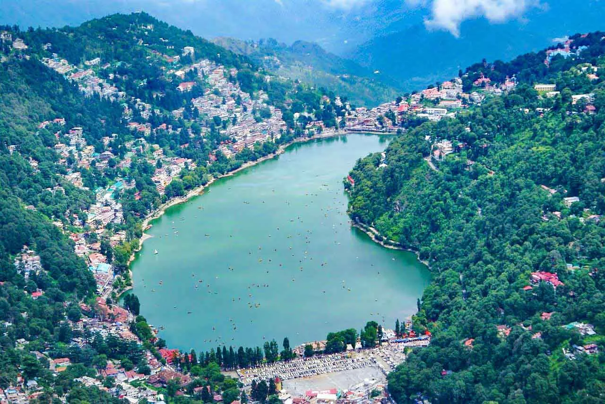
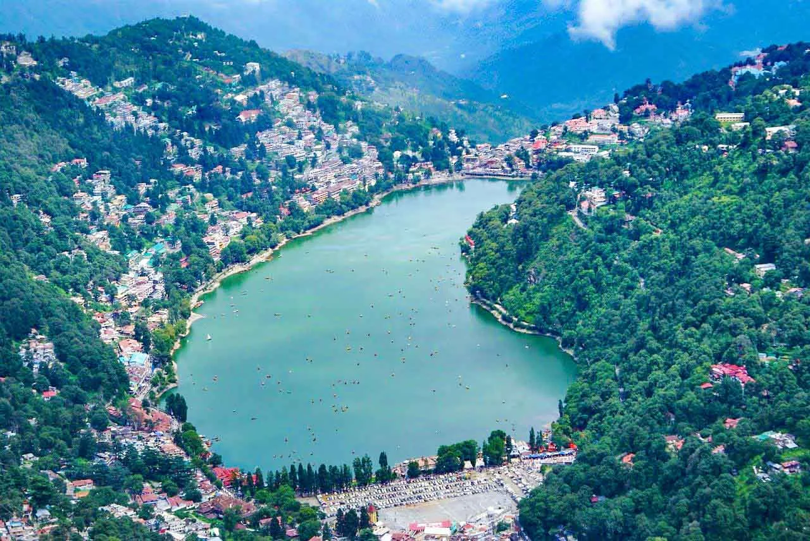

Nainital, a beautiful hill station located in the northern Indian state of Uttarakhand, is known for its picturesque beauty and rich history. The town is nestled around the Naini Lake, which is believed to be the spot where the eye of Goddess Sati fell, giving the lake its name.
The town was discovered in 1841 by a British official, Mr. P. Barron, who recognized the potential of the region as a summer retreat. Over the years, Nainital has evolved into a popular destination for tourists from all over the world.
 
